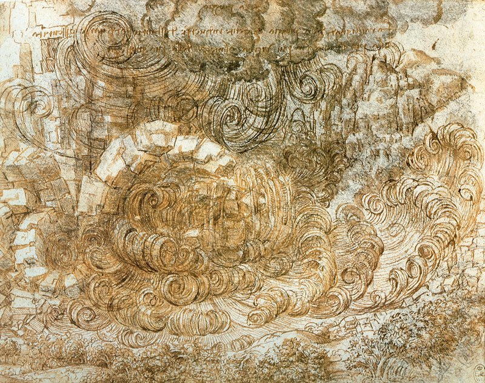
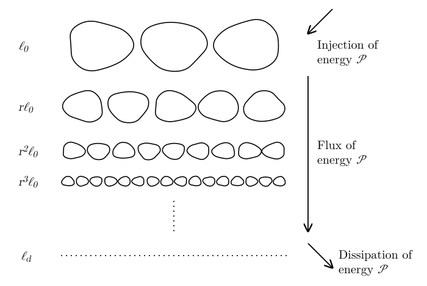
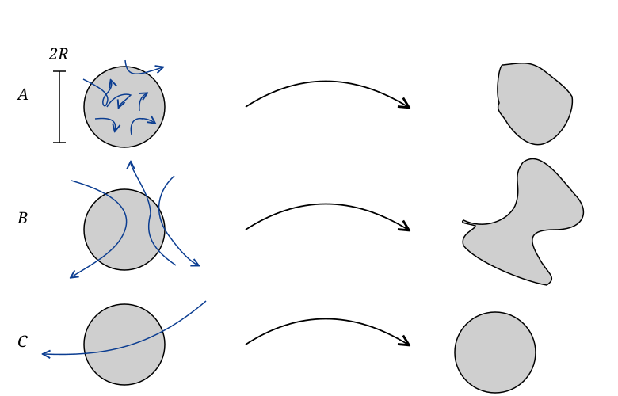

21 Turbulence
21.1 What is Turbulence?
Turbulence is the chaotic, complex motion observed in fluids across all scales, from the chaotic motion of the quark–gluon plasma produced in heavy-ion collisions (fm scale) to the motion of gas in the intracluster medium (Mpc scale). Turbulence plays an important role in many terrestrial and astrophysical flows. For example, turbulence in the interstellar medium is thought to generate overdensities that eventually grow up to become stars. Turbulence also shapes the evolution and death of stars. Turbulent flows efficiently mix fluid: think of the way in which milk and coffee mix once turbulence is generated with a spoon. Turbulent flows also efficiently dissipate kinetic energy and develop large effective shear viscosity, e.g., triggering angular momentum transport.

Despite its importance for a number of applications, including many of practical, industrial impact, and despite the fact that turbulence has been studied for more than 500 years, we still lack a rigorous theory of turbulence. The closest thing we have to a theory is Kolmogorov’s 1941 theory (K41). These notes contain an introductory-level description of K41 and some example applications. For a more in depth description, I would recommend Landau–Lifshitz Vol. 6 (Landau and Lifshitz 1987) and Pope, Turbulent Flows, 2000 (Pope 2000).
21.2 Kolmogorov’s Theory
Fluid motion is driven by external forces, such as gravity, which have a characteristic scale \(\ell_0\) comparable to the size of the system of interest. For example, for a star \(\ell_0 \sim R_*\), the radius of the star. The starting point of Kolmogorov’s theory is to decompose the flow velocity in some patch of the fluid \(\mathbf{v}\) into a mean flow \(\langle \mathbf{v} \rangle\) and a fluctuating component \(\mathbf{v}'\), not necessarily assumed to be small. The theory then assumes that, if the size \(\ell\) of the region under consideration is sufficiently small, \(\ell \ll \ell_0\), \(\mathbf{v}'\) is universal, at least in a statistical sense, meaning that it does not depend on the particular system, but that is set by the equations of motion.
To keep our notation simple, we set \(\langle \mathbf{v} \rangle = 0\), meaning that \(\mathbf{v}' =\mathbf{v}\). Note that we can always set \(\langle \mathbf{v} \rangle = 0\) by working in the appropriate reference frame, so this is not a restriction on the theory we are developing. We are also going to assume that the flow is incompressible, which is a good approximation if the velocity fluctuations are small compared to the sound speed (Chapter 9). As we will see, the velocity fluctuations become smaller at smaller scales, so this is always true at sufficiently small scales, except in shocks. The flow is then described by the Navier–Stokes equations (Chapter 18) where \(\mathbf{g}\) is some external acceleration field, typically gravity in astrophysical applications.
The equation for the evolution of the kinetic energy is obtained by multiplying Equation 21.1 by \(\mathbf{v}\): \[ \frac{1}{2} [\partial_t v^2 + (\mathbf{v} \cdot \nabla) v^2] =\mathbf{g} \cdot \mathbf{v}- \frac{1}{\rho} \nabla p \cdot \mathbf{v}+ \nu \nabla^2 \mathbf{v} \cdot \mathbf{v}. \tag{21.2}\] Consider the first term on the RHS, representing the work done by the external force on the flow. If \(\ell \ll \ell_0\), then we can take \(\mathbf{g} \sim \mathrm{const}\) over this region and \[ \langle \mathbf{g} \cdot \mathbf{v} \rangle \sim \mathbf{g} \cdot \langle \mathbf{v} \rangle = 0. \tag{21.3}\] This suggests that the evolution of \(v\) for \(\ell \ll \ell_0\) is independent of the details of the external force \(\mathbf{g}\), so \(v\) can be universal. Of course, if \(\ell \sim \ell_0\), then \(\langle \mathbf{g} \cdot \mathbf{v} \rangle > 0\) in general, meaning that kinetic energy is injected at the scale \(\ell_0\) by gravity and then evolves according to Equation 21.2.
Let’s now consider the role of pressure (note that \(\rho = \mathrm{const}\)): \[ \langle \nabla p \cdot \mathbf{v} \rangle = \frac{1}{V} \int_V \nabla p \cdot \mathbf{v} \mathrm{d} V = \frac{1}{V} \int_V [\nabla \cdot (p \mathbf{v}) - p \nabla \cdot \mathbf{v}] \mathrm{d} V = \frac{1}{V} \oint_S p\mathbf{v} \cdot \mathbf{n} \mathrm{d} S = 0. \tag{21.4}\] In the last equation we have assumed that \(\mathbf{v}\) is isotropic (no preferred direction), so \(\mathbf{v} \cdot \mathbf{n}\) is zero on average.
In a similar way, we can rewrite the average of the last term in the RHS of Equation 21.2 as \[ \int_V \nabla^2 \mathbf{v} \cdot \mathbf{v} \mathrm{d} V = \oint_S \mathbf{n} \cdot (\nabla \mathbf{v}\mathbf{v}) \mathrm{d} S - \int_V \nabla \mathbf{v}: \nabla \mathbf{v} \mathrm{d} V = - \int_V | \nabla \mathbf{v} |^2 \mathrm{d} V . \tag{21.5}\] This means that, on average, we can simplify the kinetic energy equation to read \[ \partial_t v^2 = 2\mathbf{g} \cdot \mathbf{v}- (\mathbf{v} \cdot \nabla) v^2 - 2 \nu | \nabla \mathbf{v} |^2 . \tag{21.6}\] As already mentioned, the first term on the RHS is responsible for energy injection. The last term describes kinetic energy dissipation. We can estimate this term as \[ \nu | \nabla \mathbf{v} |^2 \sim \nu \left( \frac{v (\ell)}{\ell} \right)^2, \tag{21.7}\] where \(v (\ell)\) is the characteristic velocity fluctuation on a length scale \(\ell\): \[ v (\ell) = \langle | \mathbf{v} (\mathbf{x}+\mathbf{l}) -\mathbf{v} (\mathbf{x}) | \rangle = \frac{1}{V} \int_V | \mathbf{v} (\mathbf{x}+\mathbf{l}) -\mathbf{v} (\mathbf{x}) | \mathrm{d} V. \tag{21.8}\] We use the notation \(A \sim B\) to signify that two quantities, \(A\) and \(B\), are equal up to factors of order unity.
The quantity on the RHS of Equation 21.7 has units of power per unit mass, as expected, since it is the rate at which the kinetic energy per unit mass is dissipated. Equation 21.7 suggests that the energy is dissipated at a scale \(\ell_d\) (the dissipation or Kolmogorov scale) at which the dissipation rate is equal to the mean power of the global flow: \[ \nu \left( \frac{v (\ell_d)}{\ell_d} \right)^2 \sim \frac{v^3 (\ell_0)}{\ell_0} \Longrightarrow \ell_d \sim \ell_0 \left[ \frac{\nu}{\ell_0 v (\ell_0)} \right]^{1 / 2} \left[ \frac{v (\ell_d)}{v (\ell_0)} \right] = \frac{\ell_0}{\mathrm{Re}^{1 / 2}} \left[ \frac{v (\ell_d)}{v (\ell_0)} \right] . \tag{21.9}\] In the previous equation, we have introduced the Reynolds number \[ \mathrm{Re} = \frac{\ell_0 v (\ell_0)}{\nu} . \tag{21.10}\] Experimental observations of fluids in pipes suggest that turbulence sets in when \(\mathrm{Re} \gtrsim 10^3\). In astrophysical situations, \(\mathrm{Re}\) can be much larger. For example, in the interstellar medium \(\mathrm{Re} \sim 10^9\). In neutron star mergers we contend with flows having \(\mathrm{Re} \sim 10^{15}\). Consequently, Equation 21.9 implies that \(\ell_d \ll \ell_0\) for turbulent flows.
Summarizing, in our analysis of Equation 21.6 we have found that kinetic energy is injected at large scale \(\ell_0\) (first term on the RHS) and dissipated at the dissipation scale \(\ell_d \ll \ell_0\) (last term on the RHS). This means that there is a range of scales \(\ell_d \ll \ell \ll \ell_0\), the so-called inertial range, in which the dynamics is dominated by the nonlinear term \((\mathbf{v} \cdot \nabla) v^2\). We can estimate it as \[ (\mathbf{v} \cdot \nabla) v^2 \sim \frac{v^3 (\ell)}{\ell} . \tag{21.11}\] Note that, for an incompressible flow, the nonlinear term can also be written as a divergence, \((\mathbf{v} \cdot \nabla) v^2 = \nabla \cdot (\mathbf{v} v^2)\). So, by the same argument we used for the pressure, its average over a region vanishes. In other words, the nonlinear term does not create or destroy kinetic energy. Instead, it moves kinetic energy between different scales. In a steady state, the energy per unit mass and per unit time injected at the scale \(\ell_0\), \[ \mathcal{P} = \frac{v^3 (\ell_0)}{\ell_0}, \tag{21.12}\] must flow through all the scales in the inertial range, without losses, until it reaches the dissipation scale, where it is dissipated. At the scale \(\ell\), the kinetic energy per unit mass \(v^2 (\ell)\) is passed on to smaller scales in a time \(\ell / v (\ell)\), so the flux of energy is \(v^3 (\ell) / \ell\). Since this must be the same at all scales, we have \[ \frac{v^3 (\ell)}{\ell} \sim \mathcal{P} \Longrightarrow \boxed{v (\ell) \sim (\mathcal{P} \ell)^{1/3} = v (\ell_0) \left( \frac{\ell}{\ell_0} \right)^{1 / 3}} . \tag{21.13}\] This result is key to the theory of turbulence and is called Kolmogorov’s second similarity hypothesis1. It has been verified many times through direct numerical simulations and experiments. Note that \(v (\ell)\) decreases at smaller scales, so the flow is subsonic at sufficiently small scales, as we anticipated.
Often this hypothesis is formulated in terms of the energy spectrum \(E (k)\). This is defined so that \(E (k) \mathrm{d} k\) is the kinetic energy per unit mass in eddies with wave numbers between \(k\) and \(k + \mathrm{d} k\): \[ \frac{1}{2} \langle | \mathbf{v} |^2 \rangle = \int_0^{\infty} E (k) \mathrm{d} k . \tag{21.14}\] Eddies of size \(\ell\) have wave numbers \(k \sim 1 / \ell\). The kinetic energy per unit mass in eddies of size \(\sim \ell\) is the energy in a range of wave numbers of width \(\sim k\) around \(k\), so \[ v^2 (\ell) \sim k E (k) \Longrightarrow E (k) \sim \frac{v^2 (1 / k)}{k} \sim \mathcal{P}^{2/3} k^{- 5 / 3} . \tag{21.15}\] This is the famous Kolmogorov \(k^{- 5 / 3}\) spectrum. A comparison between data and theory over about 16 orders of magnitude in scale is shown in Figure 21.2. The figure collects measurements of density fluctuations in the interstellar medium from several types of observations, with spacecraft data, including Voyager 1, at the smallest scales. It shows the three-dimensional spectrum of density fluctuations, which in Kolmogorov’s theory scales as \(k^{- 11 / 3}\). The extra factor \(k^{- 2}\) with respect to \(E (k)\) comes from the area of a shell of radius \(k\) in Fourier space. Deviations from the Kolmogorov scaling only appear at very small scales, when plasma kinetic effects become important.
![Log-log plot of the electron-density turbulence power spectrum against wavenumber q in inverse metres, over almost 20 orders of magnitude in q. Data points from different observations, including Voyager 1 at the high-wavenumber end, follow a single dashed straight line, the Kolmogorov power law with slope minus 11 thirds, labelled P_3N = 10 to the minus 2.79 times (m q) to the minus 11 thirds. Small deviations appear only at the largest wavenumbers, near the ion and electron scales marked at the top.](../figures/turbulence/voyager-spectrum.png)
A physical interpretation of the K41 model is given by the Richardson cascade (which actually predates K41). In this model, energy is injected at large scale by \(\mathbf{g}\) and dissipated at small scales by the viscosity. The nonlinear term \((\mathbf{v} \cdot \nabla) v^2\) couples different scales and is responsible for the transport of energy from large scale to small scale, as illustrated in Figure 21.3.

The main mechanisms for the transport of energy are vortex stretching and shear (Kelvin–Helmholtz) instabilities (Chapter 16).
We can interpret \(v^3 (\ell) / \ell\) as a term that controls the kinetic energy dissipation: \[ \frac{v^3 (\ell)}{\ell} = \frac{v^2 (\ell)}{\tau}, \qquad \tau = \frac{\ell}{v (\ell)}, \tag{21.16}\] where \(\tau\) is the eddy turnover time, the time over which the specific kinetic energy \(v^2 (\ell)\) is transferred to smaller scales. To see this, notice that for \(\ell_d \ll \ell \ll \ell_0\), Equation 21.6 reduces to \[ \boxed{\frac{\mathrm{d} v^2 (\ell)}{\mathrm{d} t} \sim - \frac{v^2 (\ell)}{\tau} .} \tag{21.17}\] The constancy of \(v^3 (\ell) / \ell\) implies that the rate at which turbulence dissipates kinetic energy is independent of \(\nu\) or of the detailed form of the physical processes responsible for dissipation! Instead, it is set by the dynamics at large scale. In other words, when kinetic energy is injected by mechanical work at large scale in a turbulent flow, turbulence efficiently transports this energy to small scales (generating large velocity gradients) at which point it is dissipated. This is the reason why turbulence theory applies equally well to the flow of water around the propeller of a ship and to the motion of rarefied gas in the intergalactic medium. This finding also justifies turbulence modeling approaches used in simulations.
With Kolmogorov’s second similarity law, we can provide a better estimate for \(\ell_d\). Using Equation 21.13 into Equation 21.9, we can eliminate \(v (\ell_d)\) to find \[ \boxed{\ell_d \sim \left( \frac{\nu}{\ell_0 v (\ell_0)} \right)^{3 / 4} \ell_0 = \mathrm{Re}^{- 3 / 4} \ell_0} . \tag{21.18}\] This shows that the scale separation in developed turbulence can be enormous. A direct numerical simulation needs to resolve all scales between \(\ell_d\) and \(\ell_0\), so it needs \((\ell_0 / \ell_d)^3\) grid cells. It also needs a number of time steps \(\sim \ell_0 / \ell_d\), because the time step must be smaller than the time it takes for the flow to cross one cell. So the cost of a direct numerical simulation scales as \[ \mathrm{cost} \sim \left( \frac{\ell_0}{\ell_d} \right)^4 \sim \mathrm{Re}^3, \tag{21.19}\] which makes it impossible to directly simulate very turbulent flows. The largest simulations today have about \(10^4\) grid cells in each direction, so they can reach \(\mathrm{Re} \sim 10^5\). To study flows with higher Reynolds numbers, it is necessary to give up the idea of simulating all scales in the flow and instead resort to modeling the dynamics below the numerical grid scale using turbulence theory.
Before we discuss some applications of Kolmogorov’s theory, it is worth mentioning its limitations. Astrophysical flows are often supersonic and highly magnetized. Compressibility and magnetic fields can have a profound role on the turbulent cascade. Shocks can dissipate kinetic energy directly at large scales (Chapter 11). Magnetic fields can give rise to inverse cascade whereby small magnetic field structures self-organize into large scale ordered fields (turbulent dynamo process, Chapter 24). The study of compressible, magnetized turbulence is still an active area of research and beyond the scope of this course. However, even for compressible, magnetized flows, Kolmogorov’s theory provides a good starting point and can often be applied directly.
21.3 Shredding of Clouds in a Turbulent Flow
Consider a cloud of gas of radius \(R\), for example a patch of material enriched by a supernova, that is carried by the turbulent flow of the interstellar medium. We want to compute the evolution of \(R\) with time. We will consider three cases, illustrated in Figure 21.4.

If \(R \sim \ell_d\) the particles in the cloud will undergo Brownian random motion, so, as in the case of the random diffusion of photons (Chapter 6), we have \(R \sim t^{1 / 2}\). If \(R \sim \ell_0\), then the cloud is primarily advected by the mean flow. The edges of the cloud will still experience random diffusion, so \(R \sim t^{1 / 2}\), but with an effective diffusion coefficient \(\sim \ell_0 v (\ell_0)\), which is much larger than the molecular one. Indeed, eddies of size \(\ell_0\) act like particles with mean free path \(\ell_0\) (compare with Equation 1.1) moving with velocity \(v (\ell_0)\). We will see that this is the same estimate used for the turbulent viscosity.
The more interesting case is when \(\ell_d \ll R \ll \ell_0\). In this case, the cloud undergoes rapid distortion: \[ \frac{\mathrm{d} R}{\mathrm{d} t} \sim v \sim R^{1 / 3} \Longrightarrow \frac{\mathrm{d} R^2}{\mathrm{d} t} \sim Rv \sim R^{4 / 3} . \tag{21.20}\] This is Richardson’s 4/3-law. We can use the second Kolmogorov similarity hypothesis to find the time dependence for \(R\): \[ \frac{\mathrm{d} R}{\mathrm{d} t} \sim v (\ell_0) \left( \frac{R}{\ell_0} \right)^{1 / 3} \Longrightarrow R^{2 / 3} \sim \frac{v (\ell_0)}{\ell_0^{1 / 3}} t \Longrightarrow R^2 \sim \mathcal{P} t^3 . \tag{21.21}\] In other words, \(R \propto t^{3 / 2}\): the cloud grows faster and faster, because, as it grows, it is torn apart by larger and faster eddies.
Turbulence significantly accelerates the mixing of new elements produced in supernovae with the interstellar medium, where they can subsequently form new stars, planets, and people.
21.4 Turbulence Modeling: Reynolds Stress
Directly simulating turbulent flows is impossible, so one of the goals of turbulence theory is to develop effective strategies to deal with unresolved turbulence in simulations. Commonly used models are the Reynolds averaged Navier–Stokes (RANS) and Large-Eddy Simulations (LES) frameworks. Without going into the details, both approaches are based on the general idea of coarse graining the fluid equations. That is, we replace \(\mathbf{v}\) with a suitable average \(\bar{\mathbf{v}}\) and try to come up with equations for it. If we coarse grain the Navier–Stokes equations, we find: \[ \partial_t \mathbf{v}+ \nabla \cdot \left(\mathbf{v} \otimes \mathbf{v}+ \frac{p}{\rho} \mathbf{I} \right) =\mathbf{g}+ \nu \nabla^2 \mathbf{v} \longrightarrow \partial_t \bar{\mathbf{v}} + \nabla \cdot \overline{\left(\mathbf{v} \otimes \mathbf{v}+ \frac{p}{\rho} \mathbf{I} \right)} = \bar{\mathbf{g}} + \nu \nabla^2 \bar{\mathbf{v}} . \tag{21.22}\] These equations are exact, but unfortunately not closed, because we do not have a way to compute \(\overline{\mathbf{v} \otimes \mathbf{v}}\) from \(\bar{\mathbf{v}}\). This is the so-called turbulence closure problem. To work around this, we define the Reynolds stress tensor \[ \mathbf{R}= \overline{\mathbf{v} \otimes \mathbf{v}} - \bar{\mathbf{v}} \otimes \bar{\mathbf{v}} \tag{21.23}\] and the momentum equation becomes: \[ \partial_t \bar{\mathbf{v}} + \nabla \cdot \left(\bar{\mathbf{v}} \otimes \bar{\mathbf{v}} +\mathbf{R}+ \frac{\bar{p}}{\rho} \mathbf{I} \right) = \bar{\mathbf{g}} + \nu \nabla^2 \bar{\mathbf{v}} . \tag{21.24}\] Equation 21.24 is the momentum equation for a fluid that has velocity equal to \(\bar{\mathbf{v}}\), pressure \(\bar{p}\), and a new component of the stress tensor \(\mathbf{R}\). Because \(\bar{\mathbf{v}}\) is some average of the true velocity, Equation 21.24 can be solved on a coarse computational mesh. The problem of modeling turbulence is now reduced to that of finding a good model for \(\mathbf{R}\). There are many such models in the literature.
The simplest model, which is also the most commonly used for astrophysical applications, is the turbulent (or eddy) viscosity model. Accordingly, one takes \[ \mathbf{R}= \frac{1}{3} (\mathrm{tr} \mathbf{R}) \mathbf{I} - \nu_T (\nabla \bar{\mathbf{v}}+ \nabla^T \bar{\mathbf{v}}) . \tag{21.25}\] The first term is needed because \(\mathrm{tr} \mathbf{R} = \overline{|\mathbf{v} - \bar{\mathbf{v}}|^2}\) is positive, while the trace of the second term vanishes for an incompressible flow. The first term is isotropic, so it acts like an additional pressure, the turbulent pressure \(\rho \mathrm{tr} \mathbf{R} / 3\), which we include in \(\bar{p}\). We will meet the turbulent pressure again in the in-class worksheet. With this choice, and using \(\nabla \cdot \bar{\mathbf{v}} = 0\), Equation 21.24 becomes \[ \partial_t \bar{\mathbf{v}} + \nabla \cdot \left(\bar{\mathbf{v}} \otimes \bar{\mathbf{v}} + \frac{\bar{p}}{\rho} \mathbf{I} \right) = \bar{\mathbf{g}} + (\nu + \nu_T) \nabla^2 \bar{\mathbf{v}} . \tag{21.26}\] That is, turbulence is described simply as a dissipative process and \(\nu_T\) is an effective turbulent viscosity. The turbulent viscosity, in turn, is often obtained using dimensional analysis arguments: \[ \nu_T = \ell_{\mathrm{mix}} V, \tag{21.27}\] where \(\ell_{\mathrm{mix}}\) is a characteristic length, also called the mixing length, and \(V\) is a characteristic velocity. For example, in accretion disk theory (Chapter 19), \(V = c_s\) and \(\ell_{\mathrm{mix}}\) is taken to be proportional to the scale-height of the disk \(H\): \[ \ell_{\mathrm{mix}} = \alpha H = \alpha \frac{c_s}{\Omega} \Longrightarrow \nu_T = \alpha \frac{c_s^2}{\Omega}, \tag{21.28}\] where \(\Omega\) is the angular velocity of the flow. This is the so-called \(\alpha\)-viscosity model.
For shear flows along \(x\) with shear in the \(y\)-direction, one can use the velocity gradient instead of \(V\): \[ \nu_T = \ell_{\mathrm{mix}}^2 \left| \frac{\partial \bar{v}_x}{\partial y} \right| . \tag{21.29}\] This is Prandtl’s mixing-length model. The Smagorinsky model, which is often used in large-eddy simulations, is a generalization of this model, in which \(\ell_{\mathrm{mix}}\) is proportional to the size of the grid cells and \(| \partial \bar{v}_x / \partial y |\) is replaced by the magnitude of the rate of strain of \(\bar{\mathbf{v}}\).
For industrial applications, a popular strategy is to solve additional equations for \(\partial_t \mathbf{R}\), with coefficients calibrated to experimental (wind tunnel) results. More sophisticated “subgrid” models have also been proposed for astrophysical applications, but their detailed description is beyond the scope of this course. See Brandenburg and Nordlund (2011) for more information.
Another popular approach is the Implicit Large-Eddy Simulations (ILES) method, in which \(\mathbf{R}\) is not included explicitly in the equations. Instead, a numerical scheme is chosen that has a numerical viscosity \(\nu_{\mathrm{num}} \approx \nu_T\). This approach is often effective, but ILES simulations need to be accompanied by careful resolution studies to assess their reliability, because accurate results can only be obtained if a sufficient portion of the inertial range is resolved by the simulations.
21.5 In-class worksheet
Turbulence in Core-Collapse Supernovae. We construct here a simplified model showing the role of turbulence in aiding shock revival in core-collapse supernovae.
Consider a steady accretion shock near the protoneutron star. Assume that the in-falling material is cold and that the velocity downstream of the shock is small. Show that the Rankine–Hugoniot conditions (Chapter 11) simplify to \[ p_2 \approx \rho_1 v_1^2, \qquad \frac{\rho_2}{\rho_1} = \frac{\Gamma + 1}{\Gamma - 1}, \tag{21.30}\] where all quantities have their usual meaning.
Find the equilibrium pressure \(p_2\) needed to support the accretion shock at a fixed radius \(r_s\), given the mass of the protoneutron star \(M\), and the accretion rate \(\dot{M}\). Assume that the gas upstream of the shock falls freely from rest at infinity.
Consider angular averages of the flow, e.g., \[ \langle \mathbf{v} \rangle = \frac{1}{4 \pi} \oint \mathbf{v} \mathrm{d} \Omega . \tag{21.31}\] Decompose the velocity downstream of the shock as the sum of an average (laminar) component \(\langle \mathbf{v} \rangle\) and a turbulent fluctuating component \(\delta \mathbf{v}\), \(\mathbf{v}= \langle \mathbf{v} \rangle + \delta \mathbf{v}\). Assume that \(\rho\) depends only on radius, so that \(\langle \rho \mathbf{v} \rangle = \rho \langle \mathbf{v} \rangle\). Define the Reynolds stress as \[ \mathbf{R}= \langle \delta \mathbf{v} \otimes \delta \mathbf{v} \rangle . \tag{21.32}\] Show that the conservation of momentum across the shock can be written as \[ \rho_2 \langle v_2 \rangle^2 + \rho_2 R_{r r} + p_2 = \rho_1 v_1^2 . \tag{21.33}\]
Define the specific turbulent kinetic energy as \[ \varepsilon_{\mathrm{turb}} = \frac{1}{2} | \delta \mathbf{v} |^2 = \frac{1}{2} (R_{rr} + R_{\theta \theta} + R_{\phi \phi}) . \tag{21.34}\] Assume that \(R_{rr} = R_{\theta \theta} + R_{\phi \phi}\) and show that with this definition Equation 21.33 can be written as \[ \begin{aligned} & \rho_2 \langle v_2 \rangle^2 \\ & \quad + \rho_2 [(\Gamma_{\mathrm{turb}} - 1) \varepsilon_{\mathrm{turb}} + (\Gamma - 1) \varepsilon_2] \\ & \quad = \rho_1 v_1^2 . \end{aligned} \tag{21.35}\] What is the effective adiabatic index of turbulence \(\Gamma_{\mathrm{turb}}\)?
At early times, before the turbulence develops, the accretion shock is stalled at a radius \(r_s\). What happens to the shock, once turbulence develops?
21.6 Exercises
Exercise 21.1 (Brownian and Lévy random walks) Consider the random walk of a particle. At each step \(i\) a particle at position \(\mathbf{x}_i\) jumps to position \[ \mathbf{x}_{i + 1} =\mathbf{x}_i + R_i \mathbf{d}_i, \tag{21.36}\] where \(\mathbf{d}_i\) is a random direction on the sphere (uniform in \(\phi\) and \(\cos \theta\)) and \(R_i\) is either
a fixed constant (Brownian random walk); or
it has a Pareto distribution \(p (R) \sim R^{- 1 - \beta}\), for a given \(\beta\) (Lévy random walk).
The Brownian random walk can be used to model ordinary diffusion process, while Lévy random walks can be used to model effective diffusion and mixing in a turbulent flow (superdiffusion).
Write a code to simulate Brownian and Lévy random walks with \(\beta = 2 / 3\), then compute the median of the traveled distance \(D_N = | \mathbf{x}_N -\mathbf{x}_0 |\) as a function of \(N\) for the two. For \(\beta < 1\) the mean length of a step is infinite, so the median is a better measure than the mean.
Show that \(D_N \sim N^{\gamma}\) and estimate \(\gamma\) in the two cases. Compare the results with the predictions from Kolmogorov theory for diffusion in a turbulent flow (\(R \sim t^{3 / 2}\)). Explain why the Lévy random walk gives \(D_N \sim N^{1 / \beta}\).
[You can use numpy.random.uniform and numpy.random.pareto to generate \(R_i\) and \(\mathbf{d}_i\).]
21.7 Further reading
- Clarke and Carswell (2007), Chapter 14 (introduction to turbulence).
- Landau and Lifshitz (1987) and Pope (2000).
The first Kolmogorov similarity hypothesis concerns the universality of the flow at the dissipation scale. This is not relevant to astrophysical applications, because astrophysical plasmas become collisionless at small scale, i.e., they do not behave like a fluid anymore. However, Kolmogorov’s theory still applies for \(\ell \gg \ell_d\).↩︎